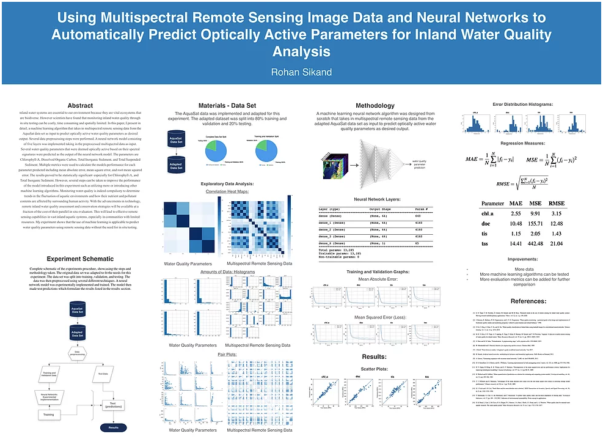

Rohan Sikand 
Using Multispectral Remote Sensing Image Data and Neural Networks to Automatically Predict Optically Active Parameters for Inland Water Quality Analysis
Poster

Abstract
Inland water systems are essential to our environment because they are vital ecosystems that are biodiverse. However scientists have found that monitoring inland water quality through in situ testing can be costly, time consuming and spatially limited. In this paper, I present in detail, a machine learning algorithm that takes in multispectral remote sensing data from the AquaSat data set as input to predict optically active water quality parameters as desired output. Several data preprocessing steps were performed. A neural network model consisting of five layers was implemented taking in the preprocessed multispectral data as input. Several water quality parameters that were deemed optically active based on their spectral signatures were predicted as the output of the neural network model. The parameters are Chlorophyll-A, Dissolved Organic Carbon, Total Inorganic Sediment, and Total Suspended Sediment. Multiple metrics were used to calculate the models performance for each parameter predicted including mean absolute error, mean square error, and root mean squared error. The results proved to be statistically significant–especially for Chlorophyll-A, and Total Inorganic Sediment. However, several steps can be taken to improve the performance of the model introduced in this experiment such as utilizing more or introducing other machine learning algorithms. Monitoring water quality is indeed compulsory to determine trends in the fluctuation of aquatic environments and how their nutrient and pollutant contents are affected by surrounding human activity. With the advancements in technology, remote inland water quality assessment and conservation strategies will be available at a fraction of the cost of their parallel in situ evaluation. This will lead to effective remote sensing capabilities in vast inland aquatic systems, especially in communities with limited resources. My experiment shows that the use of machine learning is applicable to predict water quality parameters using remote sensing data without the need for in situ testing.